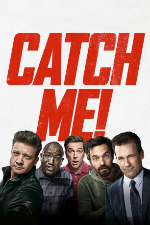

gesehen am 01.01.2019
gesehen am 01.01.2019Alternativ: Tag (Englischer Titel) gesehen am 01.01.2019
 
 IMDB-Wertung: 6.6 / 10
IMDB-Wertung: 6.6 / 10  Metascore:
Metascore: 
Eine Gruppe von Freunden spielt seit rund 30 Jahren das Kinderspiel „Fangen“. Was einst ganz normal auf dem Spielplatz anfing, hat sich zu einer bizarren Jagd weiterentwickelt. Obwohl sie mittlerweile sehr weit voneinander entfernt wohnen, scheuen die Kumpels dabei keine Kosten und Mühen. Jede noch so verquere Idee ist erlaubt bei dem Spiel, das sie jedes Jahr jeweils im Mai veranstalten. Wer gerade der Fänger ist, reist auch mal quer durchs Land, damit er bei einem anderen einbrechen oder hinter einem Busch vorzuspringen kann, um ihn mit einer Berührung zum neuen Fänger zu machen. In diesem Jahr steht die Hochzeit des einzigen bislang unbesiegten Mitspielers Jerry an. Seine Kumpels Callahan, Chilli, Hoagie und Sable hoffen, ihn endlich in die Finger zu bekommen. Doch der Champion ist natürlich vorbereitet...
Jahr: 2018
Dauer: 100 Minuten
FSK: 12
Land: USA Studio: Warner Bros.Tonspuren: DD5.1 - ,
Untertitel: Deutsch, Englisch,
Auflösung: 1080p (1920x804) Größe: 5447 MB
Genre: Komödie
Regisseur: Jeff Tomsic
Drehbuch: Rob McKittrick, Mark Steilen, Mark Steilen, Russell Adams
Soundtrack: Germaine Franco
Darsteller:
 Ed Helms als Hogan 'Hoagie' Malloy
Ed Helms als Hogan 'Hoagie' Malloy Lil Rel Howery als Reggie
Lil Rel Howery als Reggie Jon Hamm als Bob Callahan
Jon Hamm als Bob Callahan Annabelle Wallis als Rebecca Crosby
Annabelle Wallis als Rebecca Crosby Jake Johnson als Randy 'Chilli' Cilliano
Jake Johnson als Randy 'Chilli' Cilliano Isla Fisher als Anna Malloy
Isla Fisher als Anna Malloy Hannibal Buress als Kevin Sable
Hannibal Buress als Kevin Sable Nora Dunn als Linda Malloy
Nora Dunn als Linda Malloy Jeremy Renner als Jerry Pierce
Jeremy Renner als Jerry Pierce Leslie Bibb als Susan Rollins
Leslie Bibb als Susan Rollins Rashida Jones als Cheryl Deakins
Rashida Jones als Cheryl Deakins Thomas Middleditch als Dave
Thomas Middleditch als Dave Al Mitchell als AA Member
Al Mitchell als AA Member Sebastian Maniscalco als Pastor
Sebastian Maniscalco als Pastor Kate Kneeland als Wedding Caterer
Kate Kneeland als Wedding Caterer Vince Pisani als Wedding Planner
Vince Pisani als Wedding Planner Kurt Yue als Doctor Yuen
Kurt Yue als Doctor Yuen John Jacob Anderson als A.A. Member (uncredited)
John Jacob Anderson als A.A. Member (uncredited) Lucie Carroll als Country Club Patron (uncredited)
Lucie Carroll als Country Club Patron (uncredited) Marisol Correa als Wedding Guest (uncredited)
Marisol Correa als Wedding Guest (uncredited) Brian Dennehy als Randy's Father (uncredited)
Brian Dennehy als Randy's Father (uncredited) Laura Distin als Receptionist (uncredited)
Laura Distin als Receptionist (uncredited) Sandy Givelber als Bridal Family Member (uncredited)
Sandy Givelber als Bridal Family Member (uncredited) Donald K. Overstreet als Bar Patron (uncredited)
Donald K. Overstreet als Bar Patron (uncredited) Mason Pike als Wedding Guest (uncredited)
Mason Pike als Wedding Guest (uncredited)Datei: X:\2018(A-F)\Catch Me! (2018, FSK12, 1920x804).mkv seit 08.12.2018
Festplatte: HD 2017(A-Z)-2018(A-F)
 Es gibt insgesamt 151 Filme in der Gruppe '2018(A-F)'
Es gibt insgesamt 151 Filme in der Gruppe '2018(A-F)'